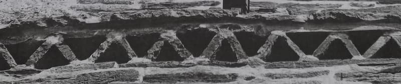

„Care-i misiunea tinerei generații de la noi?”, se întreabă sibilinic lăudărosul, locvacele și răsfățatul ritor, explicându-ne inutil ceea ce domnia sa crede că n-am aflat, adică diferența dintre generația tânără și tânăra generație, deosebire pe care o făceau și torționarii cei mai slab pregătiți: prima supraviețuia cum putea în „raiul socialist”, a doua era exterminată în iadul securist, proiectat, vai, nu de bieții guvernați, ci de cinicii guvernanți și vai, a doua oară, tot din neamul lui Iuda!
După care, deus ex machina, sosește și „soluția”, de-o finețe existențială abisală: „Să se ridice din patru labe în două, cu labele de sus să-și facă cruce. M-ați înțeles? Să treacă măcar la nivel de puric, pentru că ei, săracii, sunt patrupezi”. Nu prea e nimic de înțeles în această exprimare încâlcită, suburbană, subterană și arogantă, „de stercore Ennii” („din gunoiul lui Ennius”): nimeni dintre cei apostrofați atât de „subtil” nu a înțeles cu care „labă” a scris „trezitorul” generației tinere, fiindcă nici măcar necuvântătoarele nu l-ar asculta, toate animalele (re)simțind bunătatea sau răutatea oamenilor (de pișcăturile puricilor, ce să mai vorbim!). „Ei nici măcar nu știu (cine, tinerii sau puricii?), zice Hegel, că verticalitatea, poziția bipedă, este poziția Sfântului Duh. Extraordinar. Aceasta-i verticalitatea creștină…”.
Cu deosebită compasiune și bunăvoință, noi, talpa și prostimea țării, îi răspundem la aceste enormități antropomorfice, cu pretenții pseudo-teologice de diletant, că poziția bipedă firească este doar un atribut postural uman, printre multe altele, pe când Duhul Sfânt, a Treia Persoană Treimică, Mângâietorul, Duhul Adevărului, Care pretutindeni este și toate le plinește (le face depline), fiind Vistierul bunătăților și Dătătorul de viață, pe Care Îl rugăm zilnic să se sălășluiască întru noi, să ne curățească de toată întinăciunea și să mântuiască, ca un Bun, sufletele noastre. Iar când rostim „Crezul”, Îl mărturisim pe Duhul Sfânt, în genunchi, ca pe „Domnul de viață făcătorul, Care din Tatăl purcede, Cel ce împreună cu Tatăl și cu Fiul este închinat și slăvit, Care a grăit prin prooroci”.
Așadar, ca Persoană din Prea Sfânta Treime („structura supremei iubiri în formula dogmatică a Dumnezeirii, unice în ființă și întreite în Persoane, taina perfectei unități a Persoanelor distincte”, cum a scris Părintele Stăniloae în „Teologia dogmatică ortodoxă,” pag. 282-288), Duhul Sfânt este omnipotent, omniscient și omniprezent, deci nemărginit și necuprins, neputându-L coborî nimeni, nicicum și nicicând, la un simplu atribut rațional și limitat, fie el și de verticalitate; și Căruia, totuși, numai cei cu duhul umilit și inima înfrântă, îi pot simți prezența doar prin rugăciune curată (fără imagini de orice fel), sinceră, stăruitoare și bine primită de Dumnezeu, căci toți cei care se roagă cu adevărat sunt și teologi, ajungând prin Mila lui Dumnezeu pe căi lăuntrice neștiute, prin lucrarea tainică a Harului, să înțeleagă, priceapă și cuprindă, paterical și filocalic, apofatic și catafatic, atât cât îi este dat fiecăruia dintre cei care mențin tainic, în Duh și Adevăr, rugul aprins al Maicii Cuvântului…
„Sfântul Maxim Mărturisitorul spune: <Orice cugetare este o sinteză a celor ce cugetă și a celor cugetate, dar Dumnezeu nu este nici dintre cei ce cugetă, nici dintre cele cugetate. El este deasupra acestora. Căci altfel s-ar circumscrie ca subiect ce cugetă, având lipsă cu ceea ce cugetă, iar ca obiect cugetat căzând în chip firesc, datorită relației sub vederea celui ce cugetă>” („Teologia dogmatică ortodoxă”, pag. 310.)
Hegel a scris multe lucruri memorabile, dar teologia dreptslăvitoare nu a fost nicicând partea sa cea mai tare, el fiind un panteist notoriu; „spiritul universal” despre care vorbea, ca și întreaga „fenomenologie a spiritului”, rămân, totuși, construcții filosofice circumscrise și efemere, ca și cum, în vremurile noastre, „spiritul universal” nu s-ar mai urca pe cal (Napoleon era cel ipostaziat astfel), ci, scuzați, pe un purice, căci neamurile omenești vor fi judecate, indiferent cât de vrednice sau netrebnice ar ajunge ele în istorie, numai de Dumnezeu, pe câtă vreme „cetele” de purici, dacă se înmulțesc excesiv, devenind prea supărătoare, încă pot fi (sur)prinse și tratate în ograda sa de orice gospodar creștin cu „para-para-prim-diclor-difenil-triclor-etan” (banalul „DDT” - Sic!).
Prin urmare aici se potrivește, ca o mănușă chirurgicală, vorba lui Esop din fabula „Lăudărosul”, potrivită pentru „un om fălos care se împăunează cu vitejii săvârșite prin diferite locuri; între altele, cică la Rhodos, făcuse o săritură de 40 de pași, ce n-o putea face nimeni. Zicea că are și martori. Dar oamenii i-au răspuns simplu: <De ce-i nevoie de martori? Picioarele îți sunt aici, și tot aici ne putem închipui că este și Rhodosul. Haide să vedem: Aici e Rhodos, aici să sari!> (lat. <Hic Rhodos, hic salta>!). Expresia se folosește atunci când vrei să spui cuiva: aici să vedem cu ce te lauzi, aici să arăți tot ce poți, tot ce ai făgăduit…” („Dicționar de cuvinte și expresii celebre”, pag. 195).
N-am zis toate acestea ca să jignim cumva pe cineva, ci, doar așa, din când în când, facem și noi, talpa și prostimea țării, haz de necaz, deși vreun oarecare ritor poate avea senzația că-l insultăm, pe câtă vreme, de fapt, îl trezim… După Sfintele Canoane ale Bisericii Ortodoxe, domnia sa fiind doar un artist de curând întors spre Biserică, ar trebui cel puțin șapte ani să dea dovadă de-o căință sinceră și vie, lepădându-se definitiv și irevocabil de pantomimă (actoria de orice fel fiind trecută de către Sfinții Părinți în categoria prea-desfrânării cu mintea ajunsă țărână; de altfel, Sir Laurence Olivier, celebră personalitate actoricească planetară, a mărturisit cu sinceritate, într-un interviu acordat în preajma vârstei de 80 ani, că nu prea știe unde să-și regăsească eul adevărat, declarând deschis, că, dacă și-ar mai putea reîncepe viața, nu ar mai îmbrățișa cariera actoriei!).
Într-o situație întrucâtva superpozabilă, dar păstrând cu modestie proporțiile, Fericitul Augustin, ritor vestit în Roma antică, la rugăciunile Sfintei Monica, mama sa, și ale Sfântului Ambrozie, Episcopul Mediolanului, s-a lepădat pentru totdeauna de toată arta sa ritoricească, în gândire și faptă, ca un prim act al convertirii sale, sincere și durabile, lăsându-ne, ca semn al învierii lăuntrice, „Confesiunile”! Un bătrân și iscusit duhovnic (Părintele Savian de la Biserica Drăgănescu, pictată de ieromonahul Arsenie Boca în plin regim comunist) avea un cuvânt plin de miez: „O sută de lovituri pe spatele altora nu înseamnă nimic, una singură pe spatele nostru înseamnă enorm!”.
Într-un alt moment, într-o altă criză de personalitate, la mormântul țarului Nicolae al II-lea, în Sankt Petersburg, histrionicul și nesăbuitul ritor, după un spectacol, „cu un mesaj creștin puternic, culmea, la centrul iudaic” (Sic!), comite o altă gafă de proporții, făcându-l „schizofrenic” pe un rus ortodox, reproșându-i în mod aberant prezența statuilor lui Lenin pe stradă, ca și cum nu guvernanții sovietici le-ar fi plantat acolo, ci creștinii ortodocși. Din propria sa relatare, rusul nu și-a pus mintea cu el, având și șansa de-a nu-i fi adresat această inepție lui Jirinovski sau vreunui alt fanatic, ca și el. După un singur și aberant dialog, mai degrabă monolog al acestui intemperant mondo-moralist, domnia sa trage concluzia amăgitoare că s-ar fi făcut „înțeles”, divagând, derapând și generalizând aiuritor…
Cu mult înainte, prin 1976, am ajuns și noi, păcătoșii, la Sankt Petersburg (pe vremea aceea Leningrad - Sic!) Moscova și Kiev, închinându-ne, lăuntric și la vedere, în „Lavra Pecerska” și în interiorul multor alte sfinte locașuri, cel mai adesea de-o măreție unică și cu o sfințenie negrăită, care nu ne-au „strivit” câtuși de puțin, ci ne-au răscolit adânc, aducându-ne aminte că poporul rus ortodox, mânat de la spate prin teroarea istoriei (a se reciti convorbirea lui Giovanni Papini cu Lenin, puțin înaintea morții întemeietorului bolșevismului totalitar) a plătit scump revoluția din octombrie, leninismul, stalinismul și al doilea război mondial, precum am plătit și noi, românii, într-o vreme în care doar creștinii cu fapta mai rezistau lăuntric, fiindcă ritorii pe vremea aceea nu îndrăzneau nici să intre în Biserică, dar să mai „trezească” neamul cu fanfaronada lor pro-creștină. Credința vie o păstrau sfinții închisorilor, marii duhovnici ai neamului, părinții înțelepți, criptocreștinii, bunicile, mamele și soțiile „tricoteuse”…(Sic!). Dar, la Kiev, s-a mai întâmplat ceva cu adevărat semnificativ și de neuitat!
Ne aflam cu toții (cei care am făcut proniator acea călătorie de suflet, fie și prin „ONT”) în curtea unei Biserici, în care e adevărat nu se slujea, ci ne fusese prezentată ca monument istoric, când, deodată, ca prin minune, a apărut un bătrân creștin pravoslavnic, cu un chip luminat, blând și plin de dulceață harică, care din prima clipă în care a pătruns pe aleea principală a început să bată metanii mari, ca apoi să-și lipească îndelung fruntea de pragul sfântului locaș…
Noi îl priveam uimiți, cu dragoste și bucurie, pe acest bărbat duhovnicesc, semănând izbitor cu Sfântul Serafim de Sarov, ce nu ținea cont de prezența sigură prin apropiere a unor agenți KGB sub acoperire, după care am avut parte de-o bucurie duhovnicească și mai mare: în plină epocă sovietică, cu toate că eram un grup pestriț de turiști veniți dintr-o țară sacrificată la sfârșitul celui de al doilea război mondial prin cinismul marilor puteri (vezi „Agonia României”, scrisă de unul dintre cei mai importanți istorici contemporani, Nicolae Baciu, evadat providențial din temnițele comuniste) vedeam un om duhovnicesc.
Bătrânul rus, pe care ni-l amintim cu o precizie uimitoare, binecuvântată doar prin Mila lui Dumnezeu, s-a apropiat de noi, zâmbind cu bunătate, întrebându-ne, cu un anume subînțeles, dacă am cercetat „Lavra Pecerska”? I-am răspuns că da și ne-am mărturisit adânc impresionați de ceea ce văzusem acolo. Zâmbind în continuare, ne-a mai întrebat dacă știm cum a fost câștigată bătălia pentru apărarea Moscovei? I-am dat de înțeles că numai cel de Sus știe, și-atunci acel cuvios bătrân ne-a relatat, cu puterea simplității, cum „tătuca Stalin” a dat ordin să fie aruncate în imensele cuptoare siderurgice toate sfintele moaște, la o temperatură de zeci de mii grade, cum lemnul s-a mistuit fulgerător și argintul s-a topit imediat, dar sfintele moaște au rămas întregi și nevătămate.
Speriindu-se strașnic, sângerosul tiran (cu doi ani de seminar la dosar sau în „CV”- ul de azi!) a dat ordin să fie reașezate în alte racle și depuse la locul lor inițial. Ei bine, în timpul încercuirii Moscovei, șanțurile de apărare au fost săpate de civili, creștini cu fapta, iar sfintele moaște aduse și așezate în mare taină de jur-împrejurul capitalei încercuite. Mai târziu am aflat și din alte surse, că ceea ce ne relatase bătrânul acela sfințit era adevărat și că multe alte minuni și martiraje se petrecuseră pe teritoriul Rusiei, în timpul celei mai cumplite terori bolșevice din istoria sa. Numai în pogromul smintitului Lunacearski au pierit martiric șase milioane de creștini, iar la Oranki au fost muceniciți unsprezece mii de ieromonahi și monahi, executați prin împușcare în ceafă, dimpreună cu Episcopul lor, împușcat drept în frunte, și aruncați într-o groapă comună. E de mirare, cum un ritor atât de încântat de vitejia sa inexistentă, nu a aflat încă sau, mai grav, ignoră deliberat aceste adevăruri cutremurătoare și strigătoare la Cer, reținând ca un oarecare ins banal, insensibil, opac spiritual și cârcotaș, doar statuile lui Lenin, azi ruginite și anacronice, dar și un semn palpabil al îndrăcirii guvernanților roșii de atunci?
Din fericire, pentru toți creștinii înviați lăuntric, îl privesc mustrător toți Sfinții din Cer, iar din sinaxare martirajele unui neam ortodox, care i-a dăruit lumii, printre alții, pe Sfântul Serafim de Sarov, Sfântul Ioan de Kronstand, Sfântul Ambrozie de la Optina, Sfântul Tihon din Zadonsk, Sfântul Ierarh Ignatie Brinceaninov, Cuviosul Paisie Velicikovschi, Cuvioasa Teodora de la Sihla, Sfântul Arhiepiscop și doctor fără de arginți Luca, Sfântul Ioan Rusul, țarul Nicolae al II-lea (proslăvit prin iconomia dumnezeiască, după atâta amar de vreme de la data execuției întregii familii imperiale), dar și Rubliov, Dostoievski sau Gogol (a tâlcuit Sfânta și Dumnezeiasca Liturghie; detaliul l-am aflat de la vrednicul de pomenire arhimandrit Paulin Lecca), toți socotiți „putrefacți” de ideologii sovietici. Nu i se pare ritorului cu pricina că ar trebui să ceară iertare în genunchi tuturor creștinilor, vii sau adormiți, pe care dintr-un impuls funest îi jignește orbește, fără cel mai mic discernământ teologic, duhovnicesc, moral sau cultural?
Dacă, într-o sfântă zi, Bunul și Dreptul Dumnezeu se va hotărî să-i dea o lecție severă acestui nou ritor (plin de-o râvnă învățătorească firavă, prematură și caducă, dar alergic la smerita cugetare) pentru toate câte le-a greșit, cu voie sau fără voie, cu știință sau fără știință, în ascuns sau la vedere, din slăbiciunea trupului sau din amăgirea demonilor, din alunecare sau din neascultare, căci faptele fără credință sunt moarte, iar credința fără fapte tot moartă, cine îl va apăra de urmările diatribelor sale pseudo-duhovnicești?
Nici repetarea deasă în public a lipsei fricii, pe care o clamează prea des, nu-i va ține loc de curaj, nefolosind nimănui, precum nici celor care nu luptă „lupta cea bună” nu le este primit martirajul, căci în „Imnul Dragostei” al Sfântului Apostol Pavel, se scrie clar în ce condiții este primită lucrarea noastră de slujire a Lui Dumnezeu și a semenilor noștri!

Când am plecat de la Sfânta Mânăstire, monahia care ne-a încredințat revista, ne-a rugat să-i trimitem ceva spre publicare, încrezătoare probabil că vom aprecia integral publicația. Îi cerem cuviincios iertare, dacă nu-i vom fi împlinit așteptările în sensul sperat de dânsa, dar aceste gânduri reprezintă cam tot ceea ce credem despre responsabilitatea cuvântului scris, și rezervele noastre ferme față de scrierile amăgitoare, căci scrisul duhovnicesc real semnificativ este un dar apostolic, pentru care vom da socoteală înaintea Împăratului Ceresc la Înfricoșata Judecată. De aceea, temându-ne încă de acum de hotărârea Judecătorului Cel Nemitarnic, cerem iertare pentru orice greșeală oricât de mică sau urmă de nedreptate făcută cuiva și făgăduim, doar cu Milostivirea de Sus, să nu mai scriem nimic despre părutele isprăvi ale acestui nou ritor, ci doar să ne rugăm, statornic și după puteri, pentru sufletul său pătimaș.
Dacă va dobândi o picătură de smerenie adevărată, va recunoaște, la vremea sorocită, că războiul nevăzut e mult mai greu și anevoios decât am putea crede noi și că avem mai multe de îndreptat în sinea noastră decât în viața altora, care, așa proști și neînsemnați cum îi percepem noi, s-ar putea să ascundă în ei comori duhovnicești acoperite sub o smerenie smerită, precum cea a bătrânului acela pravoslavnic, de care noi încă nu ne-am apropiat nici măcar cu o adiere de gând…
Cu smerită metanie, ca la Taina Sfintei Spovedanii, rugăm cuviincios ca aceste rânduri de suflet să ajungă mai întâi la părintele stareț, sfinția sa putând să hotărască dacă sunt de vreun folos sau trebuie să renunțăm la ele pentru o vreme. Noi am scris așa, pentru că știm de la duhovnicii cu viață sfințită și sfințitoare, că mântuirea este cel mai scump dar de pe pământ și din întreg universul, iar ura și viclenia celui rău împotriva oamenilor sunt fără limite, dându-se o luptă pe viață și pe moarte pentru fiecare suflet în parte.
Facă-se doar voia lui Dumnezeu, căci numai El știe cu adevărat în ce duh au fost scrise gândurile de față, nouă fiindu-ne mai scumpă Mila Sa, decât orice dreptate omenească, oricât de evidentă, știind bine că aceasta din urmă este ca o cârpă lepădată înaintea Lui. Să-L rugăm pe Dumnezeu, cu multă umilință, să înscrie în inimile noastre această slavoslovie de toată vremea: „Înălțați pe Domnul Dumnezeul nostru și vă închinați la așternutul picioarelor Lui, că Sfânt este. Domnul împărățește. Să tremure popoarele! ”.
Sfinții Părinți știau întru totul luminați de Sus, prevenindu-ne cu multă înțelepciune în acest sens, că una dintre pedepsele dumnezeiești pentru răstignirea Mântuitorului Iisus Hristos, aplicată în scop pedagogic poporului într-adevăr ales (ca să se întoarcă la Adevăr, căci înțelegerea teandrică prin marii prooroci ai poporului evreu a fost de tip contractual!) este și apariția unor prooroci mincinoși în mijlocul său, cărora le-au dat crezare, amăgindu-se de peste două milenii cu false învățături de mântuire…
Am auzit mulți dintre noi, fiind ramură altoită din Milostivirea Celui de Sus, trăind doar prin legea Harului, dar atenți la semnele timpului, și probabil este adevărat, că mulți dintre rabini știu sigur că Mântuitorul Hristos a Înviat și este Fiul lui Dumnezeu, dar din mândrie, cecitate duhovnicească și interese meschine omenești, nu vor să mărturisească Dumnezeirea Sa, ba chiar conservă unele practici păgâne și ritualuri anacronice anti-creștinești, dezvăluite, printre alții, de savantul creștin Nicolae C. Paulescu, fapt pentru care a plătit toată viața, ura unor cercuri oculte urmărindu-l chiar și după mutarea sa la cele veșnice, deși dânsul este adevăratul descoperitor al insulinei!
În cazul în care noi am scris adevărul și va scăpa măcar un singur suflet din marea înșelare (și înscenare!) a celui rău, doar prin Mila lui Dumnezeu, atunci fi-vom pe deplin răsplătiți; dacă ne-am înșelat, fi-vom mustrați de Sus în conștiința noastră, cerând sincer iertare tuturor celor cărora le-am greșit cu gândul, cu cuvântul sau cu fapta.
Prea Sfântă Născătoare de Dumnezeu și Pururea Fecioara Maria, te rugăm, cu genunchii inimii plecați, rupe lanțul păcatelor, desfă ghemul neputințelor noastre lăuntrice, ridică-ne din robia cugetelor noastre și mijlocește pentru noi, păcătoșii, bucuria cea veșnic neînserată a Raiului. Doamne, Iisuse Hristoase, Fiul lui Dumnezeu, miluiește întreaga Ta zidire chemată la Taina mântuirii și pe mine, păcătosul. Amin.